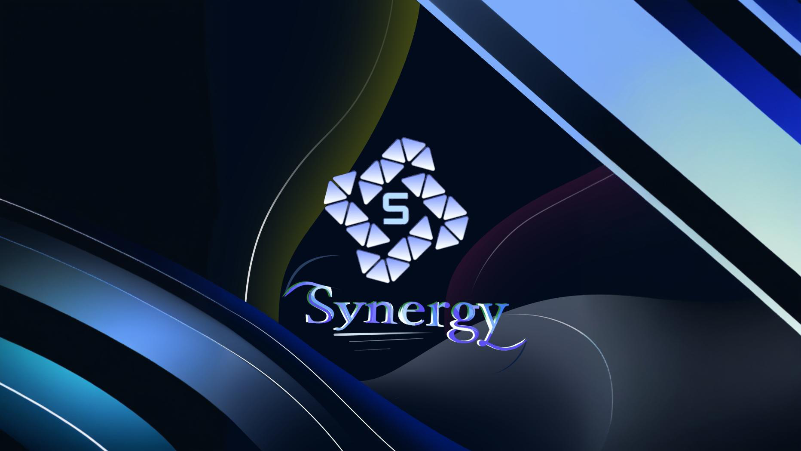
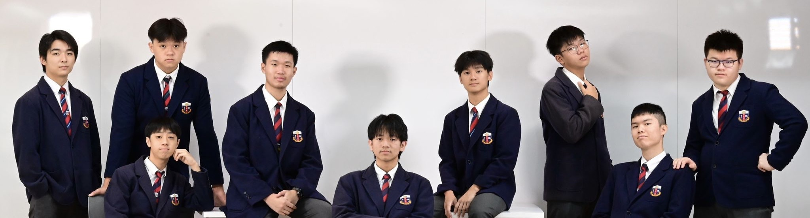

About Us
Synergy stands for the fact that 1+1 is greater than 2 when we work together. As the saying goes, “One piece of bamboo is easy to bend, but several pieces of bamboo are hard to break”. Our cabinet emphasizes on the unity and cooperation among all parties in the school. As the Student Assosiation, we promote the relationship among teachers and students, and achieve deep solidarity among all parties in the school. So that they can work together to achieve common interests, bring a rich and beautiful campus life to TSSS students, as well as to form a good atmosphere of unity and solidarity. In the coming year, we have prepared new school and joint-school activities for you. We hope that students can show their strengths through these activities and challenge themselves. Last but not least, we hope that all students will actively reflect their views to us and we will accept your criticisms and reactions without hesitation.

Our Team
-
主席 - 廖俊茗 Jimmy
- • 兩屆Pilot Project成員、班會主席、前聖誕聯歡會司儀。
- • 充分了解活動策劃，有舉辦大型活動的經驗，如歌唱比賽等。
- • 來年致力於舉辦多項大規模活動，豐富同學的校園生活。
- • 統領學生會大小事務，促使內部分工明確，堅決貫徹本會方針。
-
內務副主席 - 陳嘉禧 Max
- • 前Pilot Project成員、班會文書，現民安隊副少年領袖。
- • 熟悉學生組織內部運作，並有著豐富的團隊管理及內部調節的經驗。
- • 來年致力於協調各部門的溝通及工作，促進團隊和諧、高效。
-
外務副主席 - 司徒朗彥 Szeto
- • 前Pilot Project成員、班會成員，現週會司儀。
- • 擁有豐富的公眾演說及與他人打交道的經驗，能構建與他校學生的有效溝通。
- • 來年致力於建立與他校學生會的連接，提供多校聯誼的場景。
-
秘書 - 李銘軒 Verick
- • 前Pilot Project成員、班會成員。
- • 為人細心、負責，有著整理資訊和記錄會議內容的豐富經驗。
- • 來年致力於確保成員清楚知道會議詳情及本會目標，促進成員間的有效溝通，使活動舉辦得完善、高效。
-
財政 - 楊澤淇 Steven
- • 兩屆Pilot Project成員、班會財政。
- • 為人認真、仔細，熟練掌握財務記錄工具，於財務管理方面富有經驗。
- • 來年致力於控制活動開支、記錄財務收支並調配預算，促使活動的順利舉辦。
-
資訊科技 - 廖卓堯 Cyrus
- • 前Pilot Project成員、班會資訊科技、資訊科技隊副隊長，現資訊科技隊隊長。
- • 於製作網站及完成各類電子技術相關的項目有著豐富的經驗，能保質完成電子科技項目。
- • 來年致力於使學生會的服務電子化，如搭建學生會網站等，充分利用自己的技能令學生會的服務便捷、有效。
-
宣傳 - 蘇恩信 Fidelis
- • 前Pilot Project成員、班會主席、運動會司儀、聖誕聯歡會司儀，現週會司儀。
- • 為人外向、善於表達，於許多場合、媒介都做過宣傳工作，知道如何做到有效傳播。
- • 來年致力於用先進、有效的方式和渠道，令同學得到一手資訊，擴大活動的受眾。
-
總務 - 沈子嘉 Haridas
- • 前風紀、班長、公社科科長及各類家庭活動策劃者。
- • 有能力完成海報設計、影片製作、活動籌辦等各領域事務。
- • 來年致力於查漏補缺，協調各項活動的籌辦，使活動完整舉行。
-
總務 - 李梓豪 Jimmy Lee
- • 前英文科科長，校外義工。
- • 擅於變換角色，可於各領域作貢獻，充分追求團隊效益。
- • 來年致力於協助及推進各部門工作，並隨時支援各項活動的籌備和舉辦。